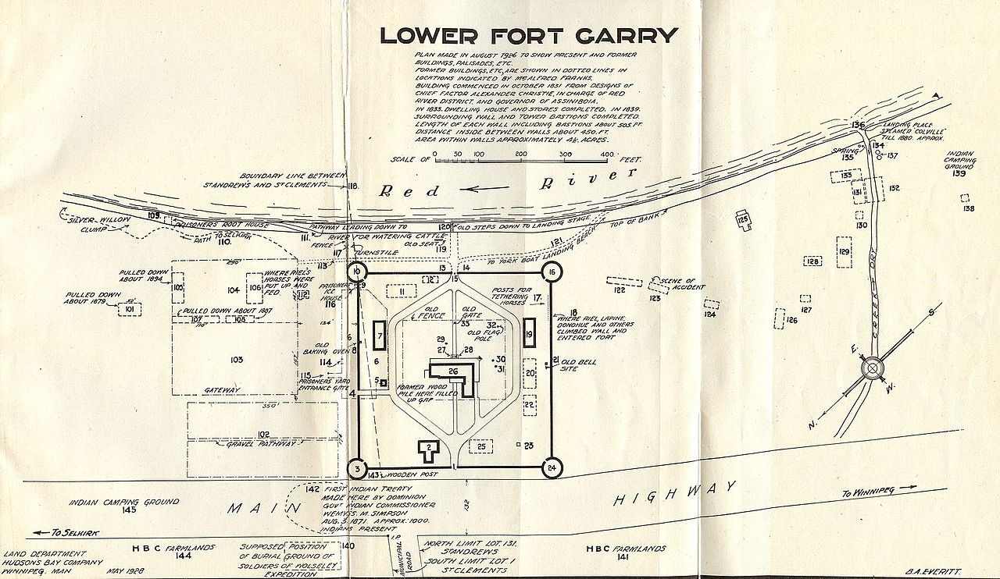
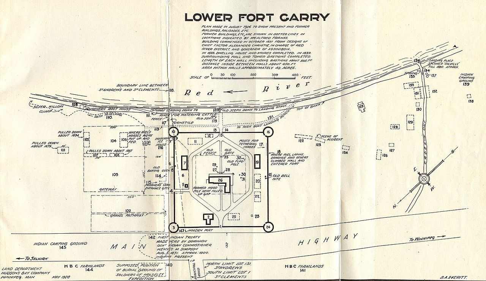

Terms
On September 12th, 1871, the treaty was formally confirmed by the Governor General in Council. Each band was to receive a reserve big enough to give each family of five 160 acres (or in like proportion for smaller or larger families). Each man, woman, and child was to get a three-dollar gratuity (or one-time payment), and each family of five was to receive a yearly annuity of $15. The government also committed to forbid the introduction or sale of alcohol on reserves and to maintain a school on each reserve.
Terms Signed
"Treaty 1 was signed by government agents Lieutenant-Governor Adams G. Archibald, Commissioner Simpson, Major A.G. Irvine, and eight witnesses. The signatories for the Anishinaabe and the Swampy Cree were: Red Eagle (Mis-koo-ke-new, or Henry Prince); Bird Forever (Ka-ke-ka-penais, or William Pennefather); Flying Down Bird (Na-sha-ke-penais); Centre of Bird’s Tail (Na-na-wa-nanan); Flying Round (Ke-we-tay-ash); Whip-poor-will (Wa-ko-wush); and Yellow Quill (Os-za-we-kwun)."
Link to Treaty One Website with many facts on Treaty OneQuick Facts
"On August 3, 2017, the Treaty No. 1 Legacy Flag Installation was unveiled at Lower Fort Garry to honour the creation of Treaty No. 1 and highlight the connection of the Treaty One Nation to the national historic site. This permanent feature includes each First Nation’s flag, as well as the Canadian flag and the Union Jack. The Legacy Flag Installation is located in an area just outside the Fort’s stone walls and is open for free public viewing year-round."
Link to Government of Canada website of treaty one 150th anniversary.![this image has a certificate of pembinatrails's recognition of treaty one land
and how they acknowledge that pembinatrails are on the lands of turtle island where
indigenous peoples have lived since time began. These are the ancestral lands of the
Anishinaabe, Ininew, and Dakota Nations as well as the traditional trade and travel
routes of the Anishininew, Dene, and Inuit. We also acknowledge we are on Treaty One
territory and the homeland of the Red River Métis. Pembina Trails School Division is
committed to working together in partnership with Indigenous communities in a
spirit of reconciliation.](images/Treaty One Land_Schools_2022-1.jpg) 

to Top